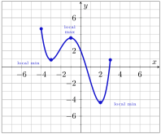
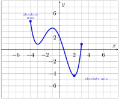

Subsection1.2Domain, Range, and Behaviors of Functions
In this section, we’ll learn to identify the domain and range of functions given in various forms, as well as determine when a function exhibits important behaviors.
to see an interactive example of these definitions.
Definition1.19.Increasing, Decreasing, and Constant.
Let \(f\) be a function that is defined on an open interval \(I\text{,}\) with \(a\) and \(b\) in \(I\) and \(b \gt a\text{.}\)
\(f\) is increasing on \(I\) if \(f(b) \gt f(a)\) for all \(a\) and \(b\) in \(I\text{.}\) In other words, as you move left-to-right on the interval \(I\text{,}\) your \(y\)-values increase.
\(f\) is decreasing on \(I\) if \(f(b) \lt f(a)\) for all \(a\) and \(b\) in \(I\text{.}\) In other words, as you move left-to-right on the interval \(I\text{,}\) your \(y\)-values decrease.
\(f\) is constant on \(I\) if \(f(b) = f(a)\) for all \(a\) and \(b\) in \(I\text{.}\) In other words, as you move left-to-right on the interval \(I\text{,}\) your \(y\)-values do not change.
to see an interactive example of these definitions.
Definition1.21.Local Minimum or Maximum.
Given a function \(f\) that is defined on an open interval \(I\text{,}\) with \(c\) in \(I\text{.}\)
\(f\) has a local maximum at \(x = c\) if \(f(c) \geq f(x)\) for all \(x\) in \(I\text{.}\) The local maximum value of \(f\) is the output \(f(c)\text{.}\)
\(f\) has a local minimum at \(x = c\) if \(f(c) \leq f(x)\) for all \(x\) in \(I\text{.}\) The local minimum value of \(f\) is the output \(f(c)\text{.}\)
Example1.22.

Figure1.23.Local Extrema
In Figure 1.23, the function has two local minimum points and one local maximum point.
The local minimum value of about \(0.9\) occurs at \(x = -3\text{.}\)
The local minimum value of about \(-4.3\) occurs at \(x = 2\text{.}\)
The local maximum value of about \(3.5\) occurs at \(x = -1\text{.}\)
Definition1.24.Absolute Minimum or Maximum.
\(f\) has an absolute maximum at \(x = c\) if \(f(c) \geq f(x)\) for all \(x\) in the domain of \(f\text{.}\) The absolute maximum value of \(f\) is the output \(f(c)\text{.}\)
\(f\) has an absolute minimum at \(x = c\) if \(f(c) \leq f(x)\) for all \(x\) in the domain of \(f\text{.}\) The absolute minimum value of \(f\) is the output \(f(c)\text{.}\)
Example1.25.

Figure1.26.Absolute Extrema
In Figure 1.26, the function has an absolute minimum point and an absolute maximum point.
The absolute minimum value of about \(-4.3\) occurs at \(x = 2\text{.}\)
The absolute maximum value of about \(4.8\) occurs at \(x = -4\text{.}\)
Exercises1.2.4Exit Exercises
Exit 1.
1.
What is the domain of \(f(x) = \sqrt{x}\text{?}\) What is the domain of \(g(x) = \sqrt[3]{x}\text{?}\) Why are these domains different?
Exit 2.
2.
Graphically speaking, what is the difference between a function being negative and a function decreasing?
Exit 3.
For the function \(F\) graphed in Figure 1.27, answer the following.
Figure1.27.\(y=F(x)\)
a.
Over what intervals is \(F\) increasing?
b.
What is the range of \(F\text{?}\)
c.
Over what intervals is \(F\) negative?
d.
What are any local minimum points on \(F\text{?}\)
e.
Over what intervals is \(F\) constant?
f.
What is the absolute maximum value of \(F\text{?}\)
Checkpoint1.28.Reflection.
On a scale of 1-5, how are you feeling with the concepts related to the graphical behaviors of functions?